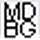

<div class="card-container">
  <div class="ans">
    <span class="expr">{{Expression}}</span>
    <span class="dicts">
      <a class="dictlink" data-dict="mdbg" data-scope="word"></a>
      <a class="dictlink" data-dict="pleco" data-scope="word"></a>
    </span>
  </div>

  {{#Reading}}<div class="rdg">{{Reading}}</div>{{/Reading}}

  <div class="zsent">
    <span class="sent" id="sentMount">{{Sentence}}</span><span class="dicts">
      <a class="dictlink" data-dict="mdbg" data-scope="sent"></a>
      <a class="dictlink" data-dict="pleco" data-scope="sent"></a>
    </span>
    {{#Source}}<div class="src">{{Source}}</div>{{/Source}}
  </div>

  <div class="zdiv"></div>

  {{#Definition}}
  <div class="sec sec-d"><div class="lab">释义</div><div class="body">{{Definition}}</div></div>
  {{/Definition}}

  {{#Notes}}
  <div class="sec sec-n"><div class="lab">笔记</div><div class="body">{{Notes}}</div></div>
  {{/Notes}}

  {{#Tags}}<div class="tags" id="tagsMount">{{Tags}}</div>{{/Tags}}

  <span id="exprData" hidden>{{Expression}}</span>
  <span id="sentData" hidden>{{Sentence}}</span>
</div>

<script>
(function () {
  function enc(s) { return encodeURIComponent(s); }
  var exprEl = document.getElementById('exprData');
  var sentEl = document.getElementById('sentData');
  var expr = exprEl ? exprEl.textContent.trim() : '';
  var sent = sentEl ? sentEl.textContent.trim() : '';

  document.querySelectorAll('a.dictlink').forEach(function (a) {
    var dict = a.getAttribute('data-dict');
    var scope = a.getAttribute('data-scope');
    var q = scope === 'word' ? expr : sent;
    if (!q) { a.style.display = 'none'; return; }
    if (dict === 'pleco') {
      a.href = 'plecoapi://x-callback-url/s?q=' + enc(q);
    } else {
      a.href = scope === 'word'
        ? 'https://www.mdbg.net/chinese/dictionary?page=worddict&wdrst=0&wdqb=' + enc(q)
        : 'https://www.mdbg.net/chinese/dictionary?page=worddict&wdrst=1&wdqchs=' + enc(q);
    }
  });

  var mount = document.getElementById('sentMount');
  if (mount && expr && !mount.querySelector('.pv')) {
    var esc = expr.replace(/[.*+?^${}()|[\]\\]/g, '\\$&');
    mount.innerHTML = mount.innerHTML.replace(new RegExp(esc, 'g'), '<span class="pv">$&</span>');
  }

  var tg = document.getElementById('tagsMount');
  if (tg && !tg.dataset.done) {
    var raw = tg.textContent.trim();
    if (!raw) { tg.style.display = 'none'; }
    else {
      tg.innerHTML = raw.split(/\s+/).map(function (t) { return '<span>＃' + t + '</span>'; }).join('');
    }
    tg.dataset.done = '1';
  }
})();
</script>
